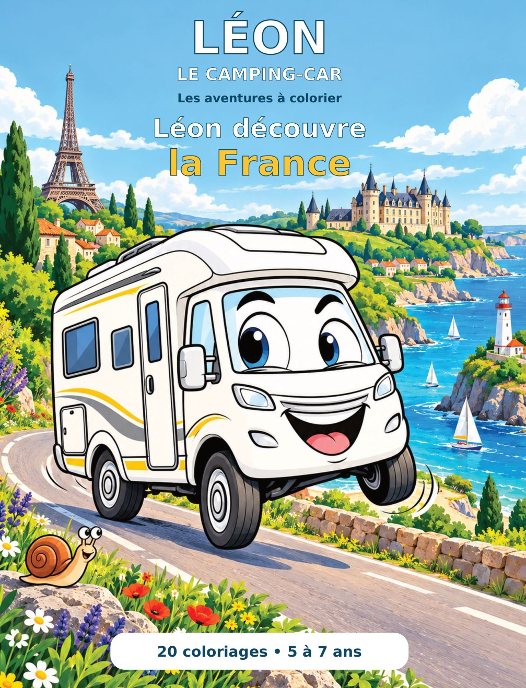
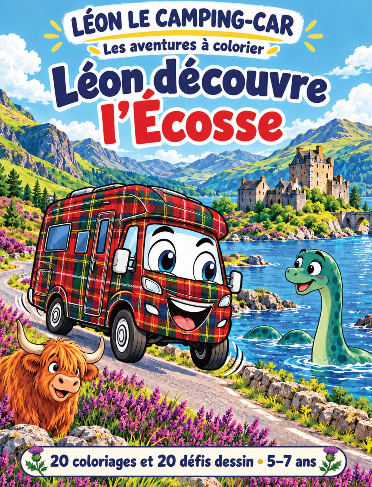
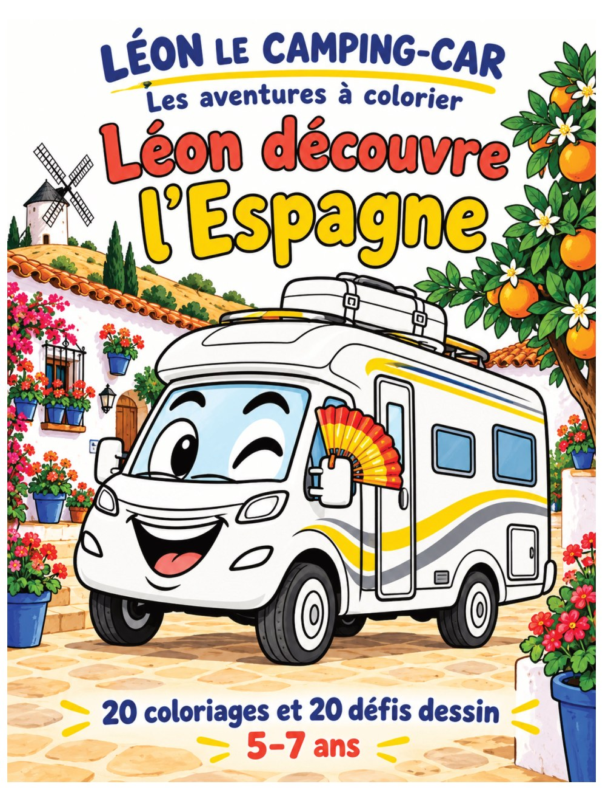
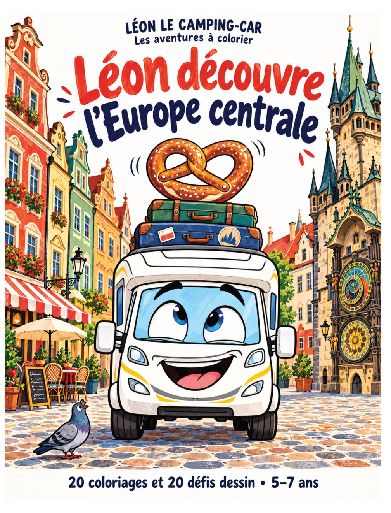
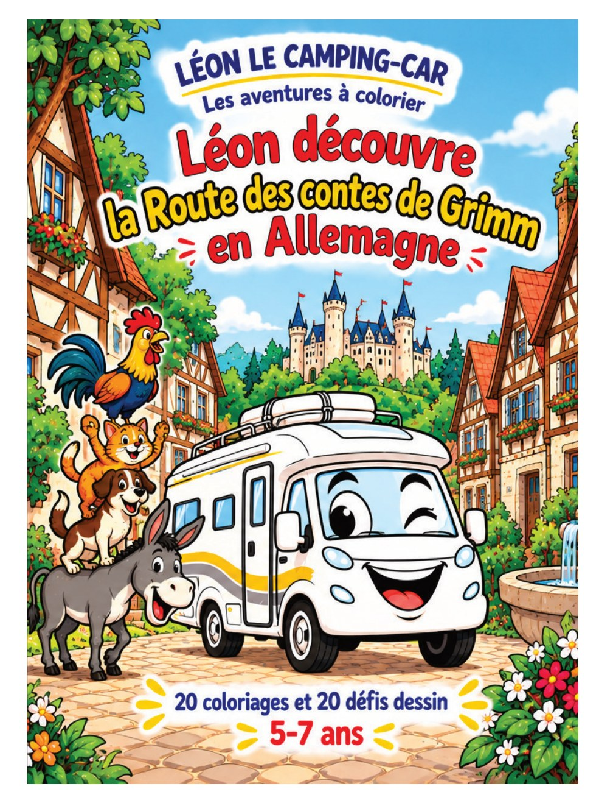
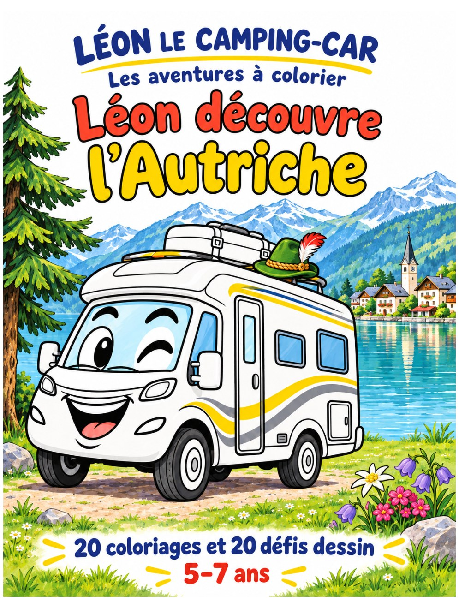
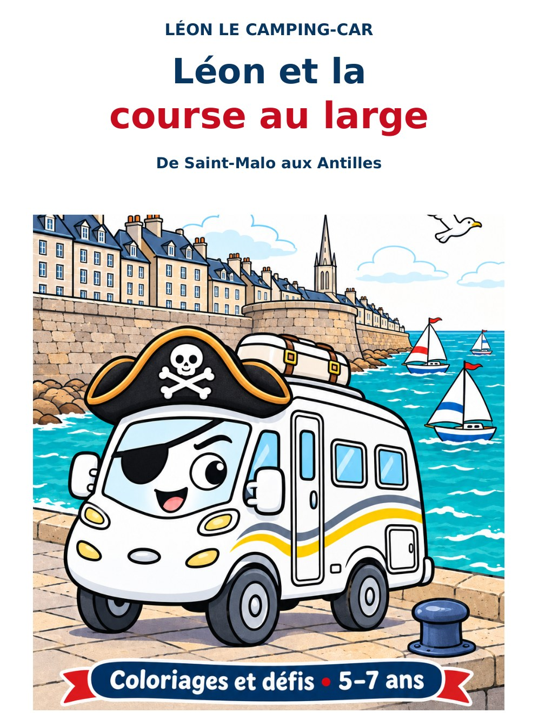

Coloriages et jeux • 5–7 ans
Léon découvre la France
De Paris à la Bretagne, Léon n'en fait qu'à sa tête ! Entre grimaces, châteaux et rencontres rigolotes, prépare tes crayons : ça va déménager !
Les aventures de Léon sur papier
Les voyages de Léon continuent dans des livres pour les enfants de 5 à 7 ans ! Au fil des pages, on découvre des pays, des paysages et des traditions à travers des coloriages et de petits jeux.

De Paris à la Bretagne, Léon n'en fait qu'à sa tête ! Entre grimaces, châteaux et rencontres rigolotes, prépare tes crayons : ça va déménager !

Léon a mis son plus beau tartan ! Mais au bord du loch Ness… gloups ! C'est quoi cette drôle de tête qui sort de l'eau ? Nessie, c'est toi ?

Olé ! Léon se prend pour un danseur de flamenco ! Entre deux grimaces et trois tours de roue, arrivera-t-il à danser sans perdre ses bagages ?


Un âne, un chien, un chat et un coq veulent monter à bord de Léon ! Mais où va-t-il mettre tout ce petit monde ? Direction le pays des contes !

Avec son chapeau à plume, Léon se croit le roi des montagnes ! Mais entre les palais, les lacs et les pauses gourmandes, il n'a pas fini de faire le clown !

À l'abordage ! Léon a mis son chapeau de pirate et rêve de traverser l'océan ! Dauphins, voiliers et palmiers… Mais qui lui a donné le commandement du bateau ?
Les liens vers les fiches Amazon seront ajoutés prochainement.
← Revenir à nos voyages